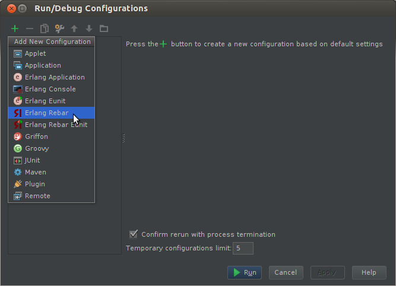
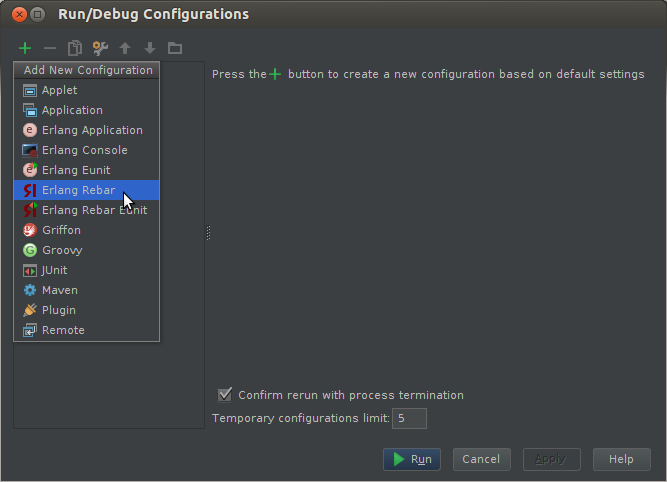

Key features
-
Intelligent Editor: for Erlang with code completion, syntax and error highlighting and code inspections

-
Code Navigation: project and file structure views, quick jumping between files, modules, functions and usages

- Tools and frameworks integration: support for Eunit and Rebar
-
VCS Integrations: out-of-the-box support for Subversion, Git and Mercurial

- Cross-platform: works on Windows, Mac OS X and Linux
Installation
- Download the latest 12.1 IntelliJ IDEA build and install it
- Setup the latest version of Erlang plugin from Configure > Plugins > Browse Repositories... > Erlang
- Restart IntelliJ IDEA.
- Done! You can import your existing Erlang project or create the new one.
Donations
If you would like to make a donation you can use PayPal.
How-tos
Erlang SDK setup
You need to specify a directory that contains bin directory with erl and erlc executables inside.
Also that directory should contains releases dir inside.
Some predefined paths:
Also that directory should contains releases dir inside.
Some predefined paths:
- /usr/lib/erlang (Linux)
- /opt/local/lib/erlang (Mac Ports on Mac OS X)
- /usr/local/Cellar/erlang/R*/lib/erlang (Homebrew on Mac OS X)
Rebar integration

After that you may create the new one Rebar run configuration (Run > Edit run configurations...),
use a little green button on the top left corner: 
use a little green button on the top left corner: 
Or execute existing (Run > Run...)

You may create run configuration for every command which Rebar supports, e.g. 
compile or eunit, etc.
Skip dependencies checkbox adds
Use test runner console checkbox attaches Eunit console which allows use graphical runner for your tests.
skip_deps=true command for Rebar executable. Use test runner console checkbox attaches Eunit console which allows use graphical runner for your tests.

Rebar-based Eunit test runner (with
eunit command):
Compilation result (with
compile command):